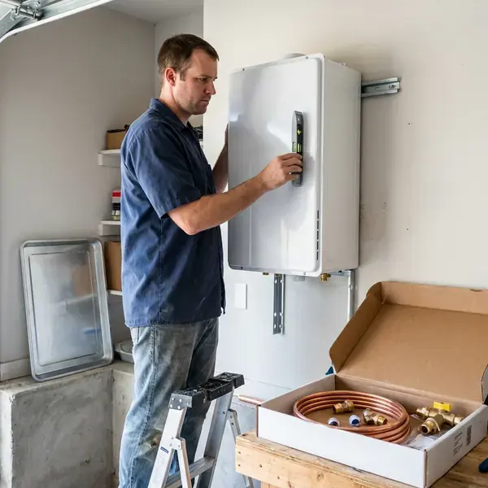

Tankless Water Heater Installation in Schofield Barracks, HI
Upgrade to an energy-efficient tankless water heater in Schofield Barracks, HI with professional installation from HKL Plumbing.
- Modern Hot Water Solutions
- Factory-Trained Installers
- Quick, Efficient Installation
- Licensed & Insured

Get Your New Tankless Water Heater in Schofield Barracks, HI.
Call HKL Plumbing today for a consultation and learn the benefits of a tankless water heater for your home.
Expert Tankless Water Heater Installation in Schofield Barracks, HI
When you choose HKL Plumbing for tankless water heater installation in Schofield Barracks, you are investing in a long-term solution. Our team handles proper sizing and venting, which are essential for the performance of your new, energy-efficient system.
Our expertise includes:
- Careful sizing and venting for top performance.
- Isolation valve kits and scale filters for hard water defense
- Precise sizing and model selection for your home.

Additional Plumbing Installation Services in Schofield Barracks, HI
We install water heaters, pumps, lines, and fixtures across Schofield Barracks, HI with careful, permitted work that passes inspection the first time.


Customers
Why Choose HKL Plumbing for Tankless Water Heater Installation in Schofield Barracks, HI?
Choosing the right plumbing partner for a major upgrade like a tankless water heater is crucial for long-term satisfaction. HKL Plumbing brings years of experience to every installation, delivering quality workmanship and reliable performance.
- Space Saving, These compact units free up valuable floor space, often installed on a wall or in a small utility closet.
- Endless Hot Water, Never run out of hot water again, even with several showers or appliances running at once.
- Energy Efficiency, Tankless units heat water only when needed, potentially lowering your utility bills compared to traditional storage tanks.
Citywide Coverage
From busy downtown blocks to quiet suburban streets, our team is equipped to provide top-tier tankless water heater installation across all of Schofield Barracks. Your hot water comfort is our priority, close to home.
Experienced Team
Our team of licensed plumbers brings extensive experience with tankless water heater installations in Hawaii homes. They are trained on current models and techniques, delivering a reliable and up-to-code setup for your property.
Safety-First Approach
Tankless units must be vented correctly to remove combustion gases safely, and we follow manufacturer clearance and termination requirements. Condensing units get a proper condensate drain and neutralizer when needed.
Trusted Certified Schofield Barracks Plumbing Services Professionals
At HKL Plumbing, we take pride in providing certified plumbing services throughout Schofield Barracks, HI. Backed by leading industry credentials, our experienced plumbers combine technical skill with genuine customer care. Whether it is repair, installation, or maintenance, we follow strict safety and quality standards to deliver long-lasting results you can trust.
Call Us Now PHCC Plumbing Contractor Recognition
PHCC Plumbing Contractor Recognition Better Business Bureau (BBB) Accreditation
Better Business Bureau (BBB) Accreditation Angi Certified Pro
Angi Certified Pro ISO 9001 Quality Management Certification
ISO 9001 Quality Management CertificationDependable Tankless Water Heater Installation Services in Schofield Barracks, HI
Commercial Tankless Water Heater Services in Schofield Barracks, HI
Businesses in Schofield Barracks benefit from the continuous hot water supply and compact design of commercial tankless water heaters. From restaurants to hair salons, we install robust systems designed to meet high-demand commercial needs. HKL Plumbing understands the requirements for commercial installations, including larger capacity units and commercial plumbing codes, so your business never runs out of hot water.

Hard Water Protection for Tankless Units in Schofield Barracks, HI
Calcium scale is the leading cause of tankless heater failure. Most municipal water in Hawaii comes from volcanic groundwater aquifers and is usually soft to moderately hard, so heavy scale is less of a problem than in many places. Scale coats the heat exchanger, reducing efficiency and triggering error codes. We install isolation valves so the unit can be flushed with a vinegar or descaling solution once a year. A scale inhibitor cartridge or whole-home softener provides extra protection.
Recirculation Systems for Tankless Heaters in Schofield Barracks
Tankless heaters can take a few extra seconds to deliver hot water to distant fixtures. A recirculation pump or dedicated return line keeps hot water close to faucets, cutting wait time and water waste. Some units have built-in pumps with smart scheduling. We design the system to fit your plumbing layout and usage patterns.
Tank to Tankless Conversions in Schofield Barracks
Converting from a tank requires more than swapping units. A 40 gallon tank heater uses roughly 40,000 BTU, while a whole-home tankless unit may need up to 199,000 BTU, so the gas line often needs to be upsized. Venting changes from a metal flue to PVC or stainless, and the unit moves to a wall location. We remove and haul away your old tank and patch the old flue penetration.
Residential Tankless System Upgrades in Schofield Barracks
Upgrading your traditional hot water tank to a tankless system in Schofield Barracks can significantly improve efficiency and comfort. We assess your home's hot water demands, existing plumbing and utility connections to recommend the best tankless model for your household size and usage patterns. Our team manages the entire conversion, including the safe removal and disposal of your old water heater, limiting disruption to your daily routine.
Upgrading from Tank to Tankless in Schofield Barracks, HI
Making the switch from a traditional tank water heater to a tankless system involves more than simply swapping units. It often requires changes to gas lines, electrical wiring and venting. HKL Plumbing manages all aspects of this conversion, making sure all upgrades meet current codes and your new tankless unit performs optimally, giving you a modern hot water solution in Schofield Barracks, HI.
Cost-Effective Tankless Conversions in Schofield Barracks, HI
While the initial cost of a tankless water heater installation in Schofield Barracks, HI may be higher than a traditional tank, the long-term energy savings and longer lifespan often make it a more cost-effective solution. We provide detailed estimates, outlining the benefits and available rebates, to help you make an informed decision for your home. Our installations are designed for top efficiency, putting money back in your pocket.

Residential Tankless Water Heater Installation in Schofield Barracks
HKL Plumbing specializes in installing tankless water heaters for residential properties. We assess your home's hot water demands, family size and existing utility connections to recommend the most suitable unit, so you get the right capacity for your needs. Our installations are designed to be energy efficient, providing endless hot water while potentially lowering your monthly utility bills in Schofield Barracks.
Tankless Water Heater Installation Near Me in Schofield Barracks, HI
If you are searching for tankless water heater installation near me, our local team can visit, measure and give you a firm quote. We check your gas meter, line size and venting options during the same visit. Many installs are scheduled within a few days.
When you search for 'tankless water heater installation near me' in Schofield Barracks, HI, HKL Plumbing is your reliable local expert. We know the plumbing and homeowner needs throughout the area, ensuring prompt and personalized service right to your doorstep.
HKL Plumbing at a Glance
- Licensed and insured plumbers serving Schofield Barracks, HI
- 24/7 emergency service with same-day scheduling
- Clear written estimates, no hidden fees
- 4.8-star rated by 529+ Hawaii customers
Schofield Barracks Map
Schofield Barracks Information
- Population
- 14,904
- Area codes
- Local
- Service area
- Schofield Barracks and communities within 40 miles
- Nearby
- Wahiawa, Mililani Town, Mililani Mauka, Royal Kunia
Installing a tankless water heater in Schofield Barracks, HI is a sound investment through warm and chilly seasons alike, delivering consistent hot water without the energy waste of heating a large tank year-round.
Expert Services
Trust our professionals for reliable HKL Plumbing solutions in Schofield Barracks, HI.
Our Specialized Plumbing Services in Schofield Barracks, HI
At HKL Plumbing, we provide a complete range of plumbing services across Schofield Barracks, HI. From leak detection to full system installations, our team ensures fast, precise, and affordable service for both residential and commercial properties. Explore our core services below:


How Our Tankless Water Heater Installation Process Works in Schofield Barracks, HI
Our tankless water heater installation process in Schofield Barracks is designed to be simple and efficient, from your first call to enjoying endless hot water.
Request a Quote
Contact HKL Plumbing at (808) 649-6718 to schedule a free consultation. We will discuss your hot water needs and assess your home's particular requirements for a tankless system.
On-Site Assessment
Our experienced plumber will visit your Schofield Barracks home to evaluate your current setup, determine the best tankless model and provide a detailed, transparent estimate.
Professional Installation
Once approved, our licensed technicians will install your new tankless water heater, making sure all gas, water and vent connections are up to code and fully functional.
Frequently Asked Questions About Tankless Water Heater Installation in Schofield Barracks
The cost of tankless water heater installation in Schofield Barracks usually ranges from $2,500 to $4,500, including the unit and labor. This can vary based on the model, fuel type (gas or electric) and any needed upgrades to your gas lines or electrical panel. We provide a detailed, upfront quote after an on-site assessment.
Fluctuating water temperature, error codes, reduced flow and unusual noises are common signs. Scale buildup is often the cause in hard water areas.
Many manufacturers offer 10 to 15 year heat exchanger warranties and shorter coverage on parts. We also warranty our installation labor.
To maintain efficiency and extend the lifespan of your tankless unit, annual flushing to remove mineral buildup is recommended, especially in areas with hard water. Checking and cleaning the air filter (for gas models) and inspecting connections are also part of routine maintenance. HKL Plumbing offers comprehensive maintenance services.
Tankless water heaters benefit from annual flushing to remove mineral buildup, especially in areas with hard water. This helps maintain efficiency and prolong the unit's lifespan. We offer maintenance services to keep your system running optimally.
Yes, installing a new tankless water heater or replacing an existing one in Schofield Barracks typically requires a plumbing permit. This ensures the installation meets local building and safety codes. HKL Plumbing handles all required permitting paperwork for you.
Size depends on how many fixtures run at once and your incoming water temperature. Many homes need a unit rated around 7 to 10 gallons per minute.
Absolutely. When properly sized, a tankless water heater can provide an endless supply of hot water, even for large families. It is crucial to select a unit with a high enough GPM (gallons per minute) rating to meet your peak demand.
What People Are Saying About Our Plumbing Experts?

Sofia M.
Two new toilets installed in one visit, no mess left behind, and the tech even adjusted a faucet he noticed was dripping. Fair pricing and really friendly.
Toilet Installation · Waipio, HI
Robert G.
The trenchless sewer replacement saved our front yard. They walked us through the camera inspection footage first so we knew exactly what we were paying for.
Sewer Line Replacement · Mililani Town, HI
Mark T.
When our office needed drain cleaning, HKL Plumbing provided quick, reliable service. The plumber arrived on time and made sure every drain flowed perfectly before leaving. Very satisfied.
Drain Cleaning · Wahiawa, HI
Patricia H.
We had a slab leak that two other companies could not find. HKL Plumbing located it in under an hour, explained our options, and the price matched the quote to the dollar.
Slab Leak Repair · Schofield Barracks, HILaura S.
I scheduled a water heater replacement, and the team made the process smooth and affordable. The new unit works perfectly, and they cleaned up after completing the job.
Water Heater Replacement · Wahiawa, HI
Daniel K.
A pipe burst at 11 pm and they actually answered. The plumber showed up within the hour, shut everything down, and had us back to normal the next morning. Could not ask for more.
Emergency Plumbing · Schofield Barracks, HI